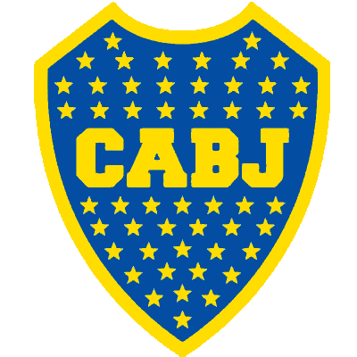

Este trabajo grupal fue realizado por Elias, Tiziano, Mateo y Erik.
El objetivo es crear un quiz que determine qué ídolo de Boca sos, utilizando HTML, CSS y JavaScript.
La web está publicada con GitHub Pages y forma parte de la práctica de control de versiones con Git.
